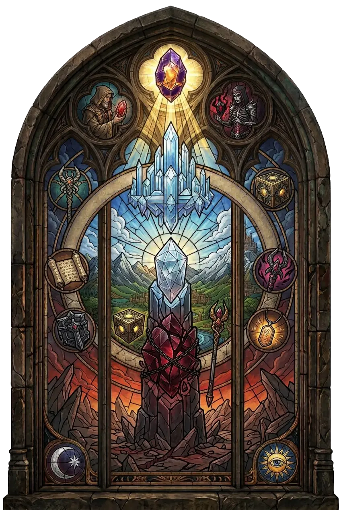

Der ursprüngliche, mächtigere Vorläufer des Horadrim-Würfels – eine Macht, die selbst die Horadrim einst für zu gefährlich hielten.
Der Würfel konnte die Energien mächtiger Gegenstände aufnehmen und bewahren. Niemand verstand seine Macht besser als Zoltun Kulle, der maßgeblich an seiner Entwicklung beteiligt war.
Überliefert · nach Diablo Wiki (Fandom)
Kanais Würfel ist ein mächtiges Artefakt der Horadrim und der ursprüngliche Vorläufer des späteren Horadrim-Würfels.
Er wurde zu Beginn der Jagd nach den drei Großen Übeln erschaffen und war deutlich mächtiger als sein Nachfolger. Der Würfel konnte die Energien mächtiger Gegenstände aufnehmen und bewahren. Niemand verstand seine Macht besser als Zoltun Kulle, der maßgeblich an seiner Entwicklung beteiligt war.
Zu Beginn der Jagd nach den Drei erkannten die Horadrim, dass sie ein Artefakt von außergewöhnlicher Macht benötigen würden. Zoltun Kulle entwarf daraufhin ein Gerät, das zunächst schlicht als der Würfel bezeichnet wurde.
Über mehrere Wochen hinweg arbeiteten Schmiede und Magier gemeinsam an seiner Herstellung. Während die Schmiede das Artefakt formten, begleiteten Magier den Prozess mit Beschwörungen und magischen Gesängen.
Doch bereits seine Erschaffung hatte einen hohen Preis. Die Beteiligten spürten, wie ihre geistige Stabilität zunehmend unter der Arbeit litt. Als der Würfel schließlich vollendet war, hafteten ihm die dunklen Methoden seiner Herstellung und deren Folgen bereits an.
Über längere Zeit nutzten die Horadrim den Würfel während ihrer Jagd nach den Großen Übeln. Er entwickelte sich zu einem zentralen Bestandteil ihrer Arbeit. Nahezu jede größere Unternehmung des Ordens griff irgendwann auf seine Macht zurück.
Unter allen Horadrim war Zoltun Kulle derjenige, der die Möglichkeiten des Artefakts am besten verstand und seine Kräfte am wirkungsvollsten einzusetzen wusste.
Eine der außergewöhnlichsten Fähigkeiten des Würfels besteht darin, die Energien mächtiger Gegenstände aufzunehmen und zu archivieren. Dadurch kann die Macht eines Artefakts bewahrt werden, selbst wenn dessen ursprüngliche Form keine unmittelbare Rolle mehr spielt.
Diese Fähigkeit machte den Würfel zu weit mehr als einem Werkzeug einfacher Transmutation. Er konnte die Eigenschaften mächtiger Gegenstände gewissermaßen aus ihnen herauslösen und ihre Essenz bewahren.
Mit der Zeit wurde den Horadrim jedoch bewusst, dass der Würfel nicht nur mächtig, sondern auch gefährlich war. Diejenigen, die seine Erschaffung überlebt hatten, fühlten sich zunehmend von seiner bloßen Anwesenheit verfolgt.
Gleichzeitig bestand die Gefahr, dass seine Macht ihre Anwender korrumpieren konnte. Der Orden kam schließlich zu dem Schluss, dass der Würfel zu gefährlich war, um weiterhin benutzt zu werden. Nicht nur Außenstehende sollten keinen Zugriff auf ihn erhalten. Selbst die Horadrim wollten ihn künftig nicht mehr verwenden.
Von allen Mitgliedern des Ordens widersetzte sich vor allem Zoltun Kulle dieser Entscheidung. Er wollte die Experimente mit dem Würfel fortsetzen.
Die übrigen Horadrim setzten jedoch das Ende seiner Arbeit durch. Damit verlor Kulle den Zugriff auf ein Artefakt, dessen Potential er wie kein anderer verstanden hatte.
Um weiterhin auf ähnliche Prinzipien zurückgreifen zu können, erschufen die Horadrim einen neuen Würfel. Dieser spätere Horadrim-Würfel war bewusst schwächer als das ursprüngliche Artefakt.
Er sollte die nützlichen Möglichkeiten von Transmutation und alchemistischer Verarbeitung erhalten, ohne dieselben Gefahren mit sich zu bringen. Der erste Würfel wurde dagegen vollständig aus dem Verkehr gezogen.
Die Horadrim vertrauten das ursprüngliche Artefakt einer geheimen Gruppe von Barbaren am Berg Arreat an. Diese Wächter hielten seine Existenz selbst vor dem Rest ihres eigenen Volkes verborgen.
Über viele Jahre hinweg bestand ihre Aufgabe darin, den Würfel vor neugierigen Blicken und vor jenen zu schützen, die seine Macht missbrauchen könnten. So verschwand das Artefakt aus der bekannten Geschichte.
Im Jahr 1265 wurde der Würfel von dem Barbarenältesten Kanai bewacht. Für ihn war das Artefakt sein wertvollster Besitz. Es war unterhalb von Sescheron verborgen.
Als Baals Armee der Zerstörung die Stadt überrannte, kam Kanai ums Leben. Doch sein Geist fand keine Ruhe. Die Zerstörung des Berges Arreat und des Weltensteins band ihn weiterhin an seine Heimat.
Nach seinem Tod blieb Kanai als Geist zurück und wachte weiter über den Würfel. Er wartete auf jemanden, der stark und ehrenhaft genug sein würde, die Verantwortung für das Artefakt zu übernehmen.
Diese Person erschien schließlich in Gestalt des Nephalem. Gemeinsam mit dem Geist Zoltun Kulles gelang es dem Nephalem, den Würfel zu bergen und seine Macht erneut zu erschließen. Von diesem Zeitpunkt an wurde das Artefakt als Kanais Würfel bekannt.
Mit der Wiederentdeckung des Würfels wurde eine Macht zugänglich, die selbst die Horadrim einst aufgegeben hatten. Zoltun Kulle spielte dabei erneut eine entscheidende Rolle. Sein Wissen ermöglichte es, die Fähigkeiten des Artefakts wieder zu nutzen.
Auch andere Abenteurer erfuhren später von der Macht, die in dem Würfel verborgen lag.
Zu einem späteren Zeitpunkt untersuchte auch Lorath Nahr Kanais Würfel. Was genau er darin entdeckte, wird nicht näher beschrieben.
Die Erkenntnis war jedoch bedeutend genug, dass sie Lorath dazu brachte, vieles von dem infrage zu stellen, was er über die Geschichte der Menschheit zu wissen glaubte. Der Quellentext lässt offen, worum es sich bei dieser Entdeckung konkret handelte.
Nach der Niederlage Malthaels ging Kanais Würfel erneut verloren. Sein weiterer Verbleib ist nicht bekannt.
Später suchte der Orden der Ersten nach dem Artefakt. Ihr Ziel bestand darin, den Würfel nachzubilden – allerdings ohne jene Gefahren zu wiederholen, die Zoltun Kulles ursprünglicher Entwurf mit sich gebracht hatte.
Kanais Würfel ist damit nicht einfach eine stärkere Variante des Horadrim-Würfels. Er ist dessen Vorgänger.
Seine Macht war so groß, dass die Horadrim selbst beschlossen, ihn aufzugeben. Seine Fähigkeiten machten ihn zu einem zentralen Werkzeug des Ordens, doch seine Herstellung, seine Wirkung auf seine Anwender und die Gefahr der Verderbnis führten schließlich dazu, dass er verborgen werden musste.
Erst viele Jahrhunderte später wurde diese Macht erneut freigesetzt. Und selbst dann blieb ein Teil dessen, was im Würfel verborgen liegt, offenbar unverstanden.